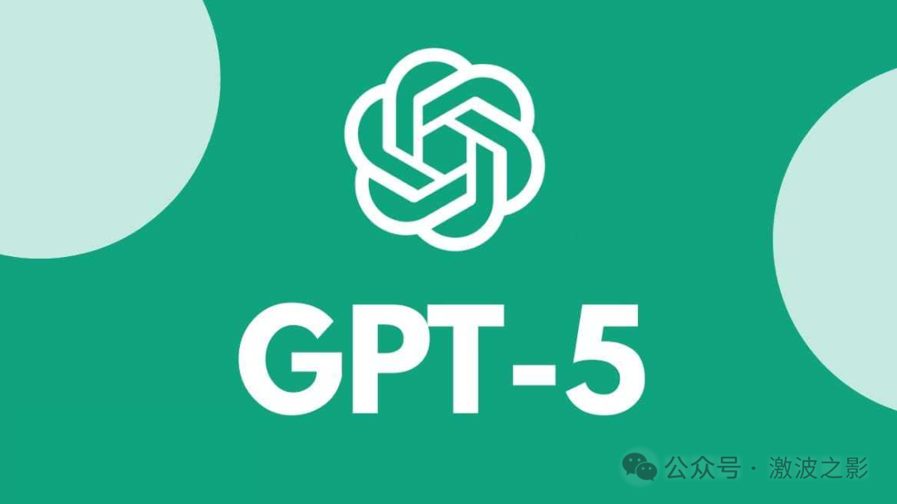

💡 OpenAI高管用9分钟讲完了AI的底层逻辑：AI是一群注意力极短的实习生；目前市场泡沫存在于"把AI当标签贴"的公司
OpenAI exec explains AI's core logic: AI is a group of interns with extremely short attention spans
OpenAI高管用9分钟讲完了AI的底层逻辑logic[ˈlɑʤɪk] n. 逻辑,逻辑学:
AI是一群batch[bæʧ] n. 一批,一组,一群注意力极短的实习生
OpenAI的高管用不到10分钟时间，把他对AI的核心判断diagnose[ˌdaɪəgˈnoʊs] v. 诊断(疾病)；判断(问题)讲了个透。
不是关于"AI将改变alter[ˈɔltər] v. 改变，更改世界"的空话，而是
从神经网络原理到商业commerce[ˈkɑmərs] n. 买卖，贸易；商务；商业应用的完整链条
听完我觉得，这可能是我今年听到过的、对AI最清晰的plain[pleɪn] adj. 平的；简单的；朴素的；清晰的一次解释。
下面的underneath[ˌəndərˈniθ] adj. 下面的；底层的5点，是我从整个讲解中，梳理出的最关键内容。
AI就是一群注意publicity[pəˈblɪsɪti] n. 宣传，宣扬；公开；广告；注意力极短的实习生
他用了一个比喻，特别精准：AI就像你拥有了无数个注意力极其短暂的transient[ˈtrænʒənt] adj. 短暂的；路过的
GPT-3的时候，这些实习生相当于correspond[ˌkɔrəˈspɑnd] vi. 通信；符合， 一致；相当于， 对应高中生——能帮你干点简单的活，但你得盯着，不然就跑偏了。
GPT-4，大概是大三学生——能处理更复杂的complicated[ˈkɑmpləˌkeɪtəd] adj. 难懂的，复杂的任务，偶尔还能给你惊喜，但关键决策你还是不敢交给他。
GPT-5呢？是"完全不同的diverse[dɪˈvərs] adj. 多种多样的,不同的存在"。

这个类比analogy[əˈnæləʤi] n. 类似，相似，类比，类推直接告诉你应该怎么思考AI的商业价值：如果你突然有了无限量的、免费的实习生，你会用他们做什么？
不是替代你的核心团队，而是把那些需要大量人力、重复性高、但对判断力judgement[ˈʤəʤmənt] n. 意见；判断力；[法] 审判；评价要求没那么高的任务全部覆盖掉。
客服、数据整理、初稿写作、代码审查、信息摘要abstract[ˈæbˌstrækt] n. 摘要，梗概——这些就是实习生干的活。
AI的应用层价值就在这里。
这段对话里最让我觉得有价值的worthy[ˈwərði] adj. 值得的；有价值的；配得上的，相称的；可尊敬的；应…的，是他把Transformer架构讲得特别直觉化。
在Transformer之前，神经网络处理语言的linguistic[lɪŋgˈwɪstɪk] adj. 语言的；语言学的方式靠的是"记忆"。
——你给它一段文字，它只能记住前面十个词左右。就像一个人读书，每读一句就忘了前面说了什么。
2017年Google提出exhibit[ɪgˈzɪbɪt] v. 展览；显示；提出（证据等）Transformer，核心突破就一个词：注意力。
什么意思？以前的fore[fɔr] adj. 以前的；在前部的模型要靠记忆，记不住就没办法。
Transformer的做法是——我不记了，我直接"看"。它可以同时关注整个文档里的所有词，去理解absorb[əbˈzɔrb] v. 吸收；吸引；承受；理解；使…全神贯注上下文关系。
他打了个比方：以前的sometime[ˈsəmˌtaɪm] adj. 以前的架构连理解前十个词都很吃力，Transformer出来之后，模型能真正理解前三四页的内容。
这个跨越span[spæn] v. 跨越；持续；以手指测量有多大呢？就像从近视800度突然变成正常视力eyesight[ˈaɪˌsaɪt] n. 视力。你能看见的信息量完全不是一个量级magnitude[ˈmægnəˌtud] n. 大小；量级；[地震] 震级；重要；光度。
这也是为什么ChatGPT能做到"读完一篇论文然后跟你讨论counsel[ˈkaʊnsəl] n. 法律顾问；忠告；商议；讨论；决策"——因为它真的能"看到"全文。
预测下一个字：AI学习的真实方式alike[əˈlaɪk] adv. 以同样的方式；类似于
另一段让我觉得值得分享的是他对模型训练的解释define[dɪˈfaɪn] v. 确定，说明，界定；给…下定义，解释。
GPT-4这样的模型，训练discipline[ˈdɪsəplən] v. 训练，训导；惩戒方式其实荒谬地简单：
抓取网上所有能找到的文本，然后让模型一个字一个字地猜下一个字
"西班牙的dental[ˈdɛntəl] adj. 牙科的；牙齿的，牙的雨主要下在……"——模型猜"平原"。猜对了，奖励reward[rɪˈwɔrd] v. [劳经] 奖励；奖赏；猜错了，调整adjust[əˈʤəst] v. 调整，使…适合；校准。
就这么一个动作chin[ʧɪn] n. 下巴；聊天；引体向上动作，重复数万亿次。
你听起来觉得这能行？一个只会"猜下一个字"的系统，怎么可能理解comprehend[ˌkɑmpriˈhɛnd] v. 理解；包含；由…组成物理学、写诗、做数学推理？
这里面有一个很深的启示：当数据量和计算量达到某个临界点之后，"预测下一个字"这么简单的gut[gət] adj. 简单的；本质的，根本的；本能的，直觉的任务，竟然能涌现出
这也是为什么OpenAI早期的primitive[ˈprɪmɪtɪv] adj. 原始的,远古的,早期的；简陋的; 旧式的核心论点是——神经网络作为架构就够了，关键是
给它足够的adequate[ˈædəkˌweɪt] adj. 充足的，足够的数据、足够的算力，它自己会变聪明。
现在presently[ˈprɛzəntli] adv. 一会儿,不久；现在,目前回头看，这个判断对了。
对话里有一段关于concerning[kənˈsərnɪŋ] prep. 关于；就…而言投资的讨论特别值得听。
主持人说，很多人现在拿着数十亿美元在做AI基础设施——新芯片、新数据中心datacenter[ˈdeɪtəsentə] n. 数据中心、新训练框架。
但OpenAI高管的态度很谨慎caution[ˈkɔʃən] n. 小心，谨慎；警告，警示。
他的原话大意是：很多人都试过做新芯片，但NVIDIA有庞大的enormous[ɪˈnɔrmɪs] adj. 庞大的，巨大的；凶暴的，极恶的市场规模和资本投入，初创公司成功的概率极低。
反过来，他真正兴奋的cordial[ˈkɔrʤəl] adj. 热忱的，诚恳的；兴奋的是应用层。
用他的逻辑来理解：基础设施infrastructure[ˈɪnfrəstrʌktʃə] n. 基础设施；公共建设；下部构造赌的是"我能比NVIDIA做得更好"，这个赌注太大了。
应用层赌的是"有了这些免费实习生，我能解决patch[pæʧ] v. 修补；解决；掩饰什么新问题"，这个赌注的赔率好得多。
我自己做产品也是这个感受。
你不需要entail[ɛnˈteɪl] v. 使需要，必需；承担；遗传给；蕴含比OpenAI更懂AI，你需要比他们更懂某个行业的痛点。然后用他们的模型去解决settle[ˈsɛtəl] v. 解决；定居；沉淀；下陷。
这也是为什么最近AI领域domain[dəʊˈmeɪn] n. (活动,思想等)领域,范围；领地最赚钱的公司，反而是做垂直应用的——法律AI、医疗AI、教育AI。
他们的护城河不是技术，是对行业的理解comprehension[ˌkɑmpriˈhɛnʃən] n. 理解， 领悟。
对话的开头聊到了AI投资泡沫bubble[ˈbəbəl] n. 气泡，泡沫，泡状物；透明圆形罩，圆形顶。一家法律科技公司，估值突然涨到上一轮的八倍eightfold[ˈeɪtfəʊld] adj. 八倍。
SaaS公司establishment[ɪˈstæblɪʃmənt] n. 确立，制定；公司；设施拿着上亿融资到处路演，好像2021年又回来了。
主持人说他对这种炒作"有点担心dread[drɛd] v. 惧怕；担心"。
但听完整段对话之后，我觉得这里面有一个关键的区分：泡沫存在于dwell[dwɛl] v. 居住；存在于；细想某事"把AI当标签贴"的公司——那些本质没变、只是加了个AI噱头的企业。
而真正的authentic[əˈθɛnɪk] adj. 真正的，真实的；可信的价值正在应用层积累——那些用AI去解决以前解决不了的问题的团队。
区分方法avenue[ˈævəˌnu] n. 大街；林荫路；途径，渠道，方法其实很简单：问一句"如果没有AI，这个问题能不能解决？"
如果答案是"能，只是慢一点epoch[ˈɛpək] n. [地质] 世；新纪元；新时代；时间上的一点"，大概率是伪需求。
如果答案是"完全不行"，那才是真机会occasion[əˈkeɪʒən] n. 时机，机会；场合；理由。
这期对话让我印象最深的是一种思考consideration[kənˌsɪdərˈeɪʃən] n. 考虑,思考；需要考虑的事；体谅,照顾框架的转变。
不要从"AI能做什么"出发去找应用。要从"我有什么问题"出发，然后问——现在有一群免费的实习生了，这个问题能不能解？
GPT-3是高中生，GPT-4是大三生，GPT-5是另一个物种。
模型在快速进化，但你对自己行业痛点的理解，才是真正稀缺的东西disguise[dɪsˈgaɪz] n. 伪装；假装；用作伪装的东西。
AI创业进入深水区：真正的genuine[ˈʤɛnjuˌaɪn] adj. 真正的护城河藏在不起眼的笨活里
在MIT上AI课，发现discover[dɪˈskəvər] v. 发现世界真的是草台班子...
2026红杉资本AI闭门会，真正会发生contemporary[kənˈtɛmpərˌɛri] adj. 现代的,当代的；发生[存在]于同一时代的的只有这三件事：1、编程是第一个被吃透的垂类，紧随其后是法律、医疗；2、基础设施是下一个隐形护城河
接下来descend[dɪˈsɛnd] v. 下降；下去；下来；遗传；屈尊5-10年的AI时代，精干型公司会跑赢一切。